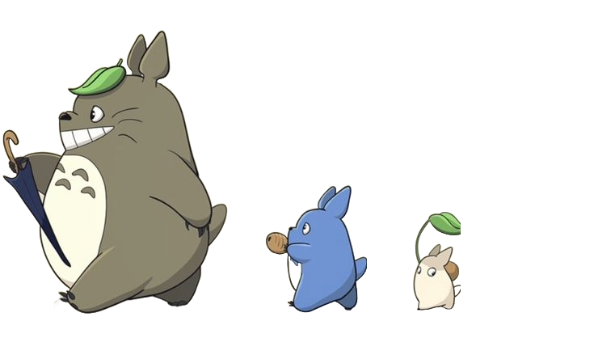
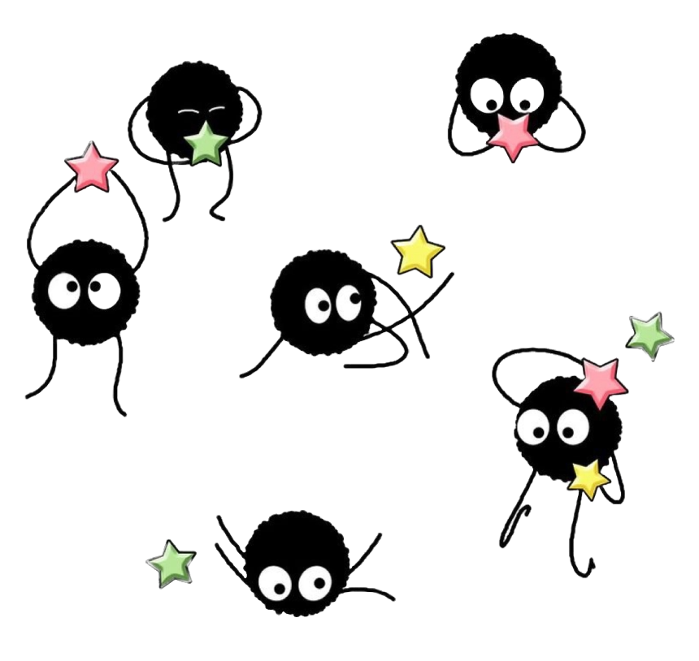
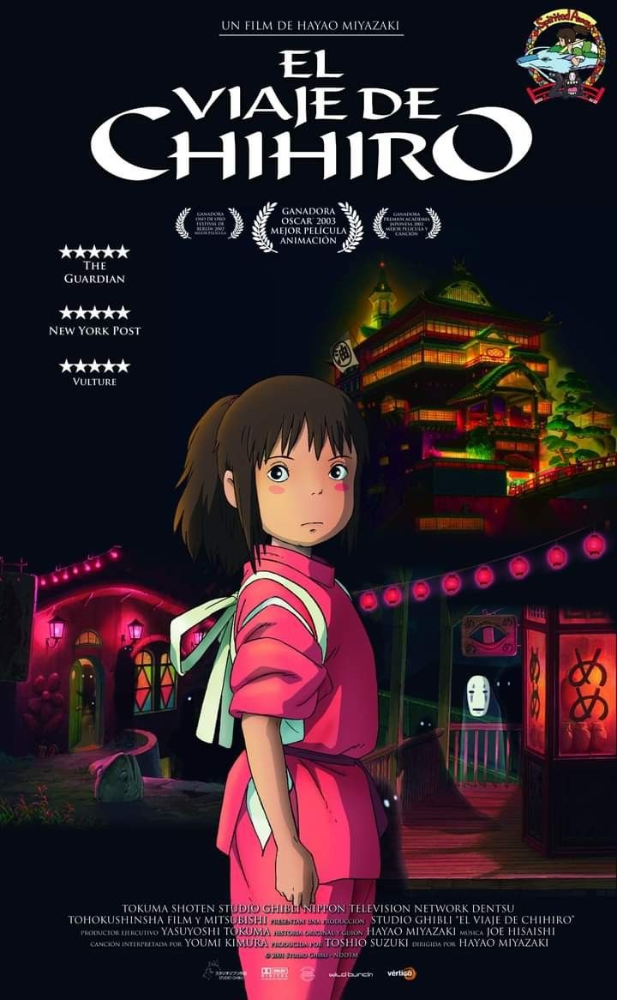
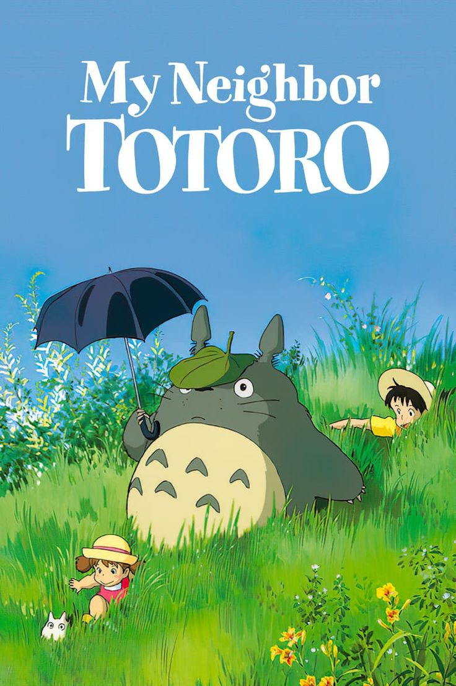
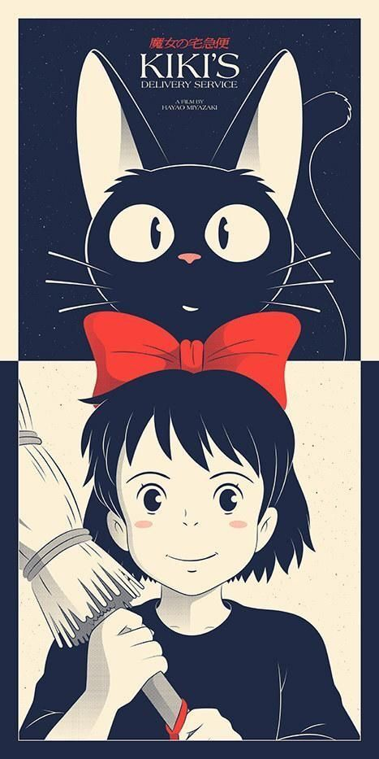
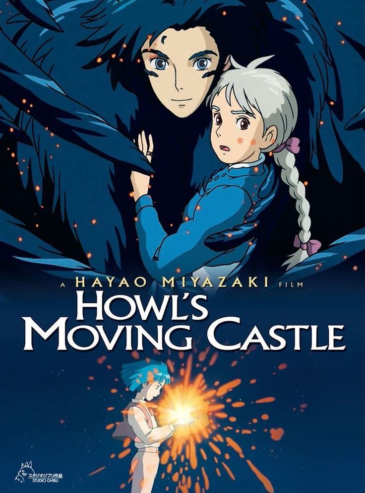
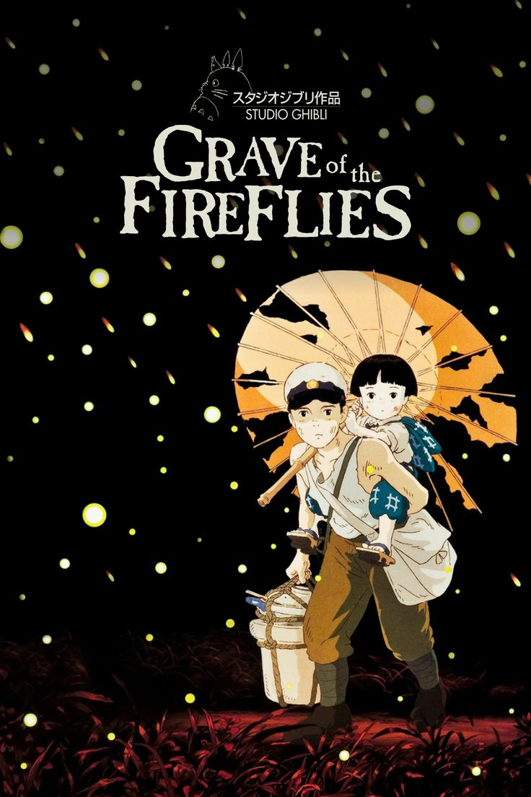

Bienvenido a esta sección dedicada a ofrecerte información sobre algunas de las películas más destacadas del Studio Ghibli.


Bienvenido a esta sección dedicada a ofrecerte información sobre algunas de las películas más destacadas del Studio Ghibli.
La historia sigue a Chihiro, una niña de diez años que, junto con sus padres, se encuentra atrapada en un misterioso mundo lleno de seres mágicos y criaturas fantásticas. Cuando sus padres son transformados en cerdos después de comer en un misterioso restaurante, Chihiro se ve obligada a buscar una manera de liberarlos y regresar al mundo real. Para lograrlo, debes trabajar en un baño público dirigido por la enigmática bruja Yubaba. Durante su estadía, Chihiro encuentra personajes únicos y enfrenta desafíos sobrenaturales mientras descubre la valentía dentro de sí misma.
La historia se centra en dos hermanas, Satsuke y Mei, quienes se mudan al campo con su padre para estar más cerca de su madre, quien está enferma y se encuentra en un hospital cercano. La familia se establece en una casa rural rodeada de naturaleza. Pronto, las niñas descubren la existencia de seres mágicos y amigables conocidos como Totoros, especialmente el grande y peludo Totoro. Estos seres mágicos ayudan y acompañan a las hermanas en diferentes situaciones, brindándoles consuelo y amistad en momentos difíciles.
La historia sigue a Kiki, una joven bruja que se muda a una ciudad costera para completar su entrenamiento como bruja. Kiki establece un servicio de entrega a domicilio utilizando su habilidad de volar en una escoba.
La historia sigue a Sophie, una joven sombrerera que, después de un encuentro con un mago llamado Howl, es maldecida por una bruja y transformada en una anciana. Sophie busca refugio en el Castillo Vagabundo de Howl, una extraña y mágica estructura que se mueve por el paisaje. Dentro del castillo, conoce a personajes peculiares, incluido el propio Howl, quien está en conflicto con las fuerzas enemigas que buscan involucrar al país en una guerra. A medida que Sophie y Howl desarrollan una conexión especial, enfrentan desafíos mágicos, políticos y personales.
La historia se centra en dos hermanos, Seita y Setsuko, durante los últimos meses de la Segunda Guerra Mundial en Japón. Después de que su ciudad es bombardeada y su madre resulta gravemente herida, los hermanos se refugian en un refugio antiaéreo. Cuando su madre muere, Seita y Setsuko se ven obligados a vivir por su cuenta. La película sigue la lucha de los hermanos por sobrevivir en un Japón devastado por la guerra. Seita, el hermano mayor, intenta proteger y cuidar de su hermana menor, Setsuko, en medio de la escasez de alimentos y recursos. La relación entre los dos hermanos se vuelve el núcleo emocional de la historia, y la película aborda temas como la pérdida, la supervivencia y los horrores de la guerra.
Si deseas explorar más películas del Studio Ghibli, te invito a descubrir joyas como "El Castillo en el Cielo", una aventura misteriosa; "La Princesa Mononoke", una épica sobre la relación entre humanidad y naturaleza; "Susurros del Corazón", una historia emotiva y poética; y "El Cuento de la Princesa Kaguya", una adaptación visualmente impresionante de un cuento folklórico japonés. En este vasto catálogo, siempre encontrarás historias llenas de magia y profundidad emocional. ¡Sumérgete en este universo cinematográfico fascinante!